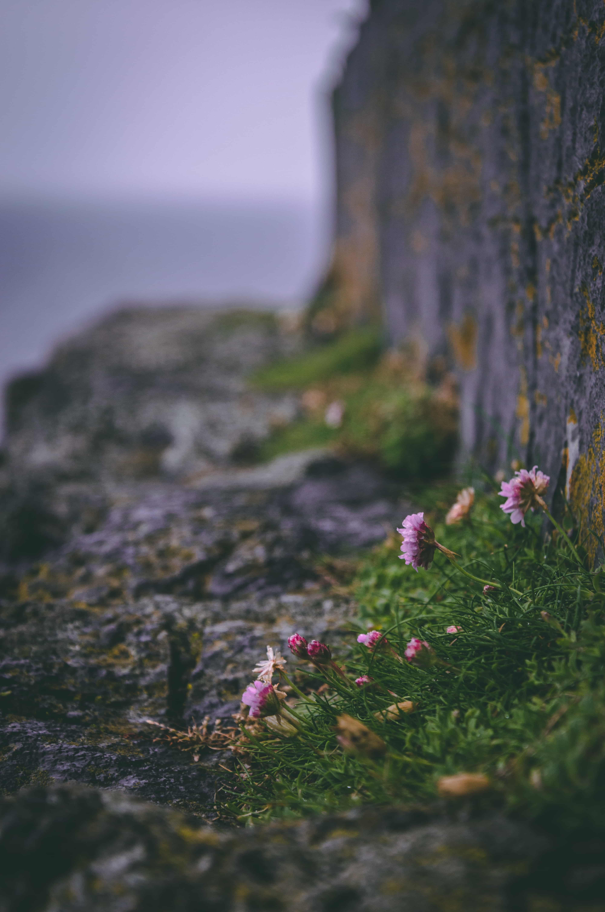

„Photography isn’t about just pushing that button. It’s about the experience of being there.” - Don McCullin
Moszkva
Írország


Izland


Szentpétervár
Ausztria

„Don’t shoot what it looks like. Shoot what it feels like.” - David Alan Harvey